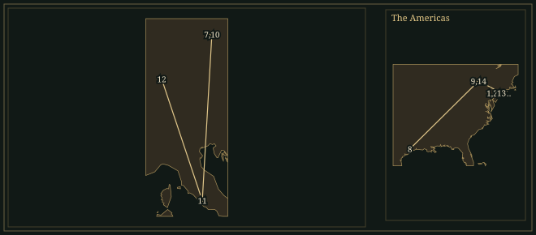

MortonFeldman
Soft attacks, unequal repetitions and lengths beyond ordinary musical memory replace the argument towards a climax.
- Trained
- Piano with Vera Maurina Press; composition with Wallingford Riegger and Stefan Wolpe
- Circle
- John Cage · David Tudor · Earle Brown · Christian Wolff · the New York painters
- Taught
- New York Studio School · State University of New York at Buffalo, from 1973
- Materials
- Graphic scores · independently timed parts · soft, precisely notated patterns
62.1Life
Morton Feldman was born in New York in 1926 to a Jewish family with roots in eastern Europe. His piano teacher, Vera Maurina Press, had studied with Busoni; her example remained important enough for him to commemorate her in Madame Press Died Last Week at Ninety. He studied composition with Wallingford Riegger from 1941 and Stefan Wolpe from 1944, without following a conservatoire degree course. Through Wolpe he met Edgard Varèse, whose attention to the physical properties of sound offered an alternative to treating notes primarily as members of a harmonic system.
In 1950 Feldman met John Cage at Carnegie Hall after hearing Webern’s Symphony, Op. 21, conducted by Dimitri Mitropoulos. He subsequently moved into the building where Cage lived. With Earle Brown, Christian Wolff and the pianist David Tudor, they formed the group later called the New York School. Their methods differed: Cage used chance operations; Feldman sought ways to avoid predictable musical rhetoric while retaining his particular taste in register, spacing and instrumental sound. Tudor’s performances made both composers’ notational experiments practically testable.
The first scoresWhat a composer leaves unspecified
Projection 1, for cello, dates from 1950. Its boxes indicate temporal positions, registers and kinds of sound. A player chooses pitches within conditions laid down by the drawing. The grid constrains activity and resists the continuous, expressive line that a cellist might otherwise produce. Other Projections and the Intersections investigated related possibilities. The graphic page also makes the whole distribution of events visible before any particular pitch is heard.
In the five Durations pieces of 1960–61, pitches are given but players proceed through them with considerable independence of timing. Their changing alignments produce different vertical combinations. Graphic, freely timed and conventionally notated works coexist during these years. He eventually stopped using graphic notation in the late 1960s. The later return to precise rhythm allowed him to specify smaller differences between events that otherwise appeared alike.
The paintersScale without a plot
Feldman’s closest artistic conversations often took place with painters, including Philip Guston, Mark Rothko, Franz Kline and Jackson Pollock. Their canvases offered models of scale, surface and the distribution of attention without requiring a narrative sequence. The practical comparison concerned how a work could be held together without a foregrounded theme and a supporting background. For many years he supported himself through the family’s clothing business, composing outside the institutions that employed most professional musicians.
He became dean of the New York Studio School in 1969, then spent 1971–72 in Berlin on a DAAD residency. In 1973 the State University of New York at Buffalo appointed him Edgard Varèse Professor. The appointment brought a regular teaching setting and contact with performers able to rehearse his unusual demands. His lectures and writings range across notation, painters, rugs and the habits of concert audiences. Their conversational manner carries exact technical questions: how long a sound lasts, what a repeat does to memory, and how a notation invites or suppresses a familiar gesture.
1970–77A melody, a chapel, a voice
The four pieces called The Viola in My Life, composed in 1970–71, bring a solo viola’s melodic fragments into sharply audible relief. Their surrounding ensembles differ, culminating in an orchestral work. Rothko Chapel, composed in 1971 for the Houston chapel commissioned by John and Dominique de Menil, makes another departure from the earlier sparse instrumental scores. Wordless choir, soprano and alto soloists, viola, celesta and percussion occupy distinct acoustic roles. Its first performance took place in the chapel in 1972, two years after Rothko’s death.
The chapel’s fourteen paintings and its enclosed space affected Feldman’s choice of forces. A vocal cluster can sustain while the viola moves; celesta and percussion give attacks without supplying a conventional accompaniment. Near the end, a comparatively plain viola melody changes the listener’s relation to the preceding music. The title names a collaboration between music, architecture and painting.
Feldman met Samuel Beckett in Berlin in 1976. Beckett supplied the brief text of neither, which Feldman set for soprano and orchestra in 1977. The score dispenses with conventional operatic characters and dialogue. The voice repeatedly occupies an exposed high register, and orchestral figures recur with altered proportions. The work was first staged in Rome. Feldman returned to Beckett in his final year, writing music for the radio play Words and Music and the instrumental For Samuel Beckett.
The woven patternRepetition with a difference
Collecting Middle Eastern rugs gave Feldman a different way to think about recurrence. In the essay ‘Crippled Symmetry’ of 1981, he discussed patterns whose repetitions differ in size, spacing or colour. A hand-made object may establish an expectation without meeting it mechanically. In the late music, a small group of notes can return with one duration altered, an attack displaced or a pitch respelt. These differences play on the uncertainty between recognising an event and remembering its exact form.
The Second String Quartet of 1983 can occupy more than five hours. Its scale makes exact retrospective comparison difficult even when the material is locally simple. Crippled Symmetry, also from 1983, sets flute, keyboard and percussion patterns beside one another without requiring all their repeated units to finish together. For Bunita Marcus and Piano and String Quartet, both from 1985, likewise make a small vocabulary sustain an extended span. Changing metres often measure spaces between attacks.
For Coptic Light, first performed in 1986, Feldman cited ancient Egyptian textiles he had seen at the Louvre and imagined an orchestral equivalent of a piano’s sustaining pedal. The large ensemble continually renews a quiet resonance. His last solo piano work, Palais de Mari, compresses late procedures into roughly twenty to thirty minutes. Feldman continued teaching and composing until illness intervened; he died of pancreatic cancer in Buffalo in September 1987. The scores require controlled attacks, careful counting and long physical concentration from the players, even when their printed pages contain comparatively few notes.
62.2Places

Read all 14 place records and their sources
- New York City · 1926-01-12 · born (documented)
Born in Woodside, Queens.
IRCAM: Morton Feldman biography · Wikipedia coordinate records
- New York City · 1941 · studied (documented)
Began composition lessons with Wallingford Riegger.
IRCAM: Morton Feldman biography · Wikipedia coordinate records
- New York City · 1944 · studied (documented)
Studied composition with Stefan Wolpe.
IRCAM: Morton Feldman biography · Wikipedia coordinate records
- Carnegie Hall New York · 1950 · heard (documented)
Heard Webern’s Symphony and met John Cage in the lobby.
- New York City · 1950 · lived (documented)
Moved into Cage’s building on Monroe Street and entered the New York School circle.
Morton Feldman Footsteps: photographed homes and grave · Wikipedia coordinate records
- New York City · 1969–1971 · worked (documented)
Served as dean of the New York Studio School.
IRCAM: Morton Feldman biography · Wikipedia coordinate records
- Berlin · 1971-09–1972-10 · lived (documented)
Held a DAAD artists’ residency in West Berlin.
IRCAM: Morton Feldman biography · Wikipedia coordinate records
- Rothko Chapel, Houston · 1972 · premiere (documented)
Feldman’s Rothko Chapel was first performed in the Houston sanctuary. Rothko Chapel.
Rothko Chapel: first Feldman performance in 1972 · Wikipedia: Rothko Chapel coordinates
- Buffalo, New York · 1973–1987 · worked (documented)
Held the Edgard Varèse professorship at the State University of New York at Buffalo.
IRCAM: Morton Feldman biography · Geographic coordinates: Buffalo, New York
- Berlin · 1976 · travelled (documented)
Met Samuel Beckett, beginning the collaboration that produced Neither. Neither.
IRCAM: Morton Feldman biography · Wikipedia coordinate records
- Rome · 1977 · premiere (documented)
Neither received its first production at the Teatro dell’Opera. Neither.
IRCAM: Morton Feldman biography · Wikipedia coordinate records
- Darmstadt · 1984–1986 · worked (documented)
Taught at the Darmstadt summer courses.
IRCAM: Morton Feldman biography · Geographic coordinates: Darmstadt
- Beth Moses Cemetery, West Babylon · 1987 · buried (documented)
Buried at Beth Moses Cemetery on Long Island.
Morton Feldman Footsteps: photographed homes and grave · Geographic coordinates: Beth Moses Cemetery, West Babylon
- Buffalo, New York · 1987-09-03 · died (documented)
Died at his Buffalo home.
Wikipedia: Morton Feldman · Geographic coordinates: Buffalo, New York
Inheritance
Specific encounters, borrowings and transformations. Follow a connection to its evidence.
What came in
What went out
- No sourced connection in this collection yet.
62.3The Sound
How the music is built — harmony, line, rhythm, colour, form.
𝆏Attack and decay
A piano or celesta note begins to die as soon as it is struck; a bowed string or flute can sustain. Feldman composes the difference. After a shared attack, the fading keyboard tone shifts the balance and colour of the sound.
𝄞Register and spacing
A few pitches placed far apart can sound more exposed than a dense chord. Feldman often keeps registers stable long enough for a small move to matter. Alongside the interval, instrument, octave, attack and the duration of the preceding silence determine an event’s weight.
𝄐Notated freedom
The early graph scores specify some properties and delegate others. The Durations series fixes pitches while loosening coordination between players. Later works often specify rhythms minutely. Each approach offers a different compositional tool.
𝄋Unequal repetition
A recurring figure may gain a fraction of a beat, change its spacing or return in a slightly different order. The pattern is recognisable without functioning as a theme destined for development. A repeat can also be literal; its altered context and the listener’s uncertain memory change what it does.
𝄾Duration and memory
In a work lasting several hours, the opening cannot remain available to memory in the way the first theme of a short sonata does. Feldman makes the scale of the piece part of its material. Local events remain exact, while their relationship to distant events becomes harder to verify by ear.
♮Harmony without cadence
Chromatic intervals and quiet consonances coexist without a dependable tonic. Rothko Chapel can introduce a plain melodic line while preserving the harmonic independence of its surroundings. Sustained sonorities are heard as particular combinations of instruments and pitches.
62.4Works
A listening path, not a complete catalogue.
- 1950Projection 1CelloA graphic score specifying registers and sound types within a temporal grid. The player chooses exact pitches under those constraints.
- 1960–61Durations I–VFive different chamber combinationsPrescribed pitches, quiet dynamics and independent timing. The changing alignment of parts makes each realisation’s harmonic succession different.
- 1970–71The Viola in My Life I–IVSolo viola with different ensembles; No. IV with orchestraShort melodic gestures emerge from carefully spaced instrumental events. The solo viola is genuinely a foreground voice, making these pieces useful contrasts to the later all-over patterns.
- 1971Rothko ChapelSoprano and alto soloists, mixed choir, viola, celesta and percussionWordless music for the Houston chapel housing Rothko’s paintings. Sustained choral sonorities, isolated percussion and a closing viola melody make a sequence of clearly different textures.
- 1977neitherSoprano and orchestra; text by Samuel BeckettAn opera without a conventional cast or plot. Beckett’s brief text is distributed through repeated orchestral figures and demanding high vocal writing.
- 1983Crippled SymmetryFlute/bass flute, piano/celesta, vibraphone/glockenspiel; three playersAn extended study in repeated patterns whose layers do not remain aligned. Similar figures can overlap differently without becoming material for a regular cumulative process.
- 1983String Quartet No. 2String quartetPerformances can extend beyond five hours. Quiet articulation, counting and recollection must remain controlled across an exceptional span.
- 1985For Bunita MarcusPianoWritten for the composer and pianist Bunita Marcus. Sparse, very quiet events and carefully measured silences occupy roughly seventy minutes, with changes of metre altering the distances between them.
- 1985; premiered 1986Coptic LightLarge orchestra, including two pianosFeldman’s last orchestral work; the publisher dates it 1986. Ancient Coptic textiles prompted an investigation of instrumental colour and a continuously changing orchestral equivalent of the sustaining pedal.
- 1986Palais de MariPianoThe last solo piano work. Its shorter span offers a concentrated encounter with the late language: quiet recurring sonorities, altered spacing and no conventional climactic destination.
62.5In the Score
Short examples, engraved and playable. Press play; notes light up as they sound.
Late pattern writing · schematicA repeated figure with one displaced return
Independent parts · schematicIndependent attacks and changing overlaps
62.6Sister Arts
Paintings and poems that share a world with this music.

Feldman collected Middle Eastern rugs and discussed their unequal repetitions in ‘Crippled Symmetry’ (1981). This Anatolian carpet is not documented as one he owned. Its repeating star medallions and bounded field make his comparison tangible: a motif can recur with changes to its intervals, contours or patches of colour. The Met’s photograph is released under CC0.

In his note for Coptic Light, Feldman identifies ancient textiles at the Louvre as a stimulus, asking how fragments can retain the character of the civilisation that made them. This Met fragment offers a comparison. Its surviving threads and colour boundaries suggest the persistence and renewal of instrumental colour in the orchestral work. The museum image is CC0.
62.7Listen
Recordings worth seeking out.
- Rothko ChapelKim Kashkashian, Sarah Rothenberg, Steven Schick, Lauren Snouffer, Sonja Bruzauskas; Houston Chamber Choir, Robert SimpsonECM New Series · 2015 releaseRecorded in Houston, but not in the chapel itself. The viola, wordless solo voices, celesta and percussion remain distinct from the choir; the album places Feldman beside Satie and Cage.
- Piano and String QuartetAki Takahashi and Kronos QuartetNonesuch · 1991; released 1993A single continuous performance lasting just under eighty minutes. Compare the piano’s attack and decay with the quartet’s sustained sonorities.
- For Bunita MarcusMarc-André HamelinHyperion · 2016; released 2017A seventy-two-minute account recorded at Wyastone. The pianist’s control of very soft attacks is the central technical requirement; the sustained pedal makes silence different from an empty acoustic space.
62.8Lineage
Webern offered the example of a widely spaced, quiet event carrying structural weight; Cage encouraged Feldman’s departure from inherited procedures without prescribing its result. Later composers including Skempton, Harrison and Frey pursue different forms of economy, recurrence and extended listening. Where Reich’s process music makes a rule audible, Feldman’s repeated objects can leave the next alteration unpredictable.
Questions to take away
Which features can you hear before following the notation?
Listen to ‘A repeated figure with one displaced return’, then compare what you heard with the caption and the written notes. Distinguish a quoted passage from a schematic illustration.
Read the example
Further reading
- Morton Feldman, Give My Regards to Eighth Street: Collected Writings, edited by B. H. Friedman (Exact Change).study
Feldman’s essays, lectures, programme notes and other writings connect composing with the New York visual arts.
- David Cline, The Graph Music of Morton Feldman (Cambridge University Press, 2016).study
Reconstructs the notation, organisation and genesis of the graph works from published and unpublished sources.
- IRCAM, ‘Morton Feldman: Biography’ (online resource).reference
A chronological account of his teachers, graphic notation, artistic friendships and institutional posts.
Cite this page
No publication date is asserted. The access date below is the site build date; replace it with the date you consulted the page.
Chicago
Contrapunctus. “Morton Feldman.” Accessed 18 October 2026. https://mottopanikeiku.github.io/contrapunctus/composers/feldman.html.
BibTeX
@misc{contrapunctus-composers-feldman,
author = {{Contrapunctus}},
title = {Morton Feldman},
howpublished = {\url{https://mottopanikeiku.github.io/contrapunctus/composers/feldman.html}},
note = {Accessed 2026-10-18}
}